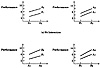
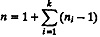
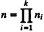

| Previous | Table of Contents | Next |
| TABLE 16.1 Noninteracting Factors | ||
|---|---|---|
| A1 | A2 | |
| B1 | 3 | 5 |
| B2 | 6 | 8 |
| TABLE 16.2 Interacting Factors | ||
|---|---|---|
| A1 | A2 | |
| B1 | 3 | 5 |
| B2 | 6 | 9 |

FIGURE 16.1 Graphical presentation of interacting and noninteracting factors.
Novice analysts who are not aware of the experimental design and analysis techniques often get misleading conclusions due to the following mistakes:
The experimental design and analysis techniques presented in this part help avoid these problems.
There are numerous varieties of experimental designs. The three most frequently used designs are simple designs, full factorial designs, and fractional factorial designs. Explanations of these designs and their advantanges and disadvantages follow.
In a simple design, we start with a typical configuration and vary one factor at a time to see how that factor affects performance.
For example, in the workstation design study discussed earlier in Section 16.1, a typical configuration might consist of a Z80 CPU with two disk drives running a managerial task by a college graduate. The performance of this configuration is measured first. Next, we vary the first factor—the CPU—and then performance is compared with other CPUs in the same configuration and workload. This will help us decide which CPU is the best. We then change the number of disk drives to one, three, and four, comparing performance so as to find the optimal number.
Given k factors, with the ith factor having ni levels, a simple design requires only n experiments, where

However, this design does not make the best use of the effort spent. It is not statistically efficient. Also, if the factors have interaction, this design may lead to wrong conclusions. For example, if the effect of the CPU depends upon the size of the memory, the optimal combination cannot be determined until all possibilities are tried. This design, therefore, is not recommended.
A full factorial design utilizes every possible combination at all levels of all factors. A performance study with k factors, with the ith factor having ni levels, requires n experiments, where

In the workstation design study, the number of experiments would be
The advantage of a full factorial design is that every possible combination of configuration and workload is examined. We can find the effect of every factor including the secondary factors and their interactions. The main problem is the cost of the study. It would take too much time and money to conduct these marry experiments, especially when taking into account the possibility that each of these experiments may have to be repeated several times. There are three ways to reduce the number of experiments:
The first alternative is specially recommended. In some cases, one can try just two levels of each factor and determine the relative importance of each factor. A full factorial design in which each of the k factors is used at two levels requires 2k experiments. This is a very popular design and is called 2k design. After the list of factors has been reduced substantially, one can try more levels per factor. The third alternative of fractional factorial design is described in the next section.
| Previous | Table of Contents | Next |
){kind=link}
){kind=link}